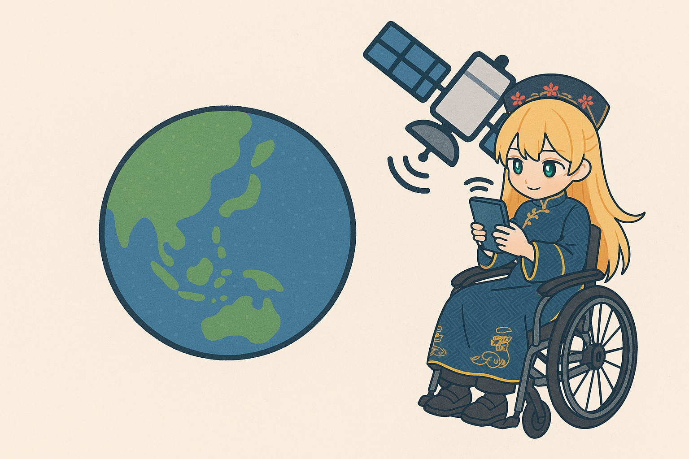

## 🛰️GPSで活躍する相対論 #### 〜人工衛星はどのように📱スマートフォンの位置を測るのか？〜  --- ### 自己紹介 <div class="profile-container"> <div class="profile-left"> * さめ(мег-сск) * 🧑💻 フリーランスのソフトウェアエンジニア * 🧑🎓 社会人学生として通信制大学在学中 * 得意分野: * 📸 コンピュータビジョン (画像認識/点群処理) * 🌍 空間情報処理 (地理情報/リモートセンシング) * ☁️ クラウドインフラ設計/IaC (AWS, GCP) * [GitHub](https://github.com/s-sasaki-earthsea-wizard) * [YouTube](https://www.youtube.com/@SyotaSasaki-EW) * [Speaker Deck](https://speakerdeck.com/syotasasaki593876) </div> <div class="profile-right"> <img src="assets/images/avatar.png" alt="avatar" height="350px" width="350px"> </div> </div> --- ### 今日話すこと <div class="simple-box"> * 🛰️GPSなどのGNSSはどうやって位置を測定しているのか？ * 相対論効果を考慮しないケース (幾何光学) * 特殊相対論効果の影響 * 一般相対論効果の影響 </div> </br> <div class="highlight-box"> * 📱スマートフォンが🗾地図アプリなどであなたの位置を教えてくれる時、何が起きているのかわかります！ </div> --- ### 前提とする仮定 <div class="simple-box"> * 地球は球 * 地球は自転しない * 地球は電気的に中性 * 地球の質量分布は均一 * 地球に大気は存在しない (真空である) * 地球以外の天体(月など)は存在しない </div> </br> <div class="highlight-box"> * 実際の地球とかけ離れているけど、これで問題をシンプルにします！ * でも意外とこの近似でOKです </div> --- ### 技術的な用語の補足 <div class="simple-box"> * GNSS (Global Navigation Satellite System)が人工衛星による測位システムの総称 * 🇺🇸GPS (Global Positioning System)はGNSSの一つ * 🇷🇺GLONASS, 🇪🇺Galileo, 🇨🇳BeiDou, 🇯🇵みちびきなどがある * 今日は日本人にとって最も身近なGPSと称します * 本当はゲーム機を全部「ファミコン」と呼ぶお母さんのような感じなのですが... </div> --- ## 幾何光学による位置測定 --- ### 距離測定の簡単な例 <div class="simple-box"> - 時刻$t=0 \ (\mathrm{s})$に地点$A$から速度$v=10 \ (\mathrm{m/s})$で地点$B$に移動を始める - 時刻$t=10 \ (\mathrm{s})$に地点$B$に着いた - $AB$間の距離は? </div> $$ ||AB|| = 10 \ (\text{m/s}) \times 10 \ (\text{s}) = 100 \text{m} $$ <div class="highlight-box"> - **2点間の距離は速さ$\times$時間で計算できる！** </div> --- ### 光による距離測定 <div class="simple-box"> * 光の速さ: * $c = 3.0 \times 10^8 \text{(m/s)}$ * 人工衛星が時刻$t_0$に地点$P$から電磁波を送信する * 時刻$t_0 + \Delta t$に地点$Q$でスマートフォンが電磁波を受信する * 地点$P$と地点$Q$の距離は? </div> </br> <div class="highlight-box"> * 基本は同じ： 距離 = 光の速さ $\times$ 時間 $$ ||PQ|| = c \Delta t $$ </div> --- ### 1つの人工衛星による測位 <div class="simple-box"> * 人工衛星1が電波を時刻$t_0$に地点$P_1$から送信する * $\Delta t$後に地点$Q$でスマートフォンが電波を受信する * 地点$P_1$と地点$Q$の距離は$R_1 = c \Delta t$ </div> --- ### スマートフォンはどこにあるか？ <div class="highlight-box"> * $P_1$を中心とする半径$R_1$の球面$S_1$の表面のどこかにいる！ </div> --- ### 2つの人工衛星による測位 <div class="simple-box"> * 2つの人工衛星から同様に距離を測定したとする * スマートフォンは球$S_1$の表面のどこかにいる * かつ球$S_2$の表面のどこかにいる </div> --- ### スマートフォンの位置を絞り込む <div class="highlight-box"> * 2つの球の共通部分は円 * つまり円$C$の円周上のどこかにいる！ * **衛星の数を増やしてさっきよりも絞り込めた！** </div> <img src="assets/images/two-sphere-cross-section.svg" width="800px"> --- ### 3つの人工衛星による測位 <div class="simple-box"> * 3つ目の衛星から球$S_3$を得る * 円$C$の円周上のどこかにいることがわかっている * 円$C$と球$S_3$の交点は2点 ($Q_1, Q_2$) * **つまり、2つの点のどちらかにまで絞られる！** </div> --- ### 4つの人工衛星による測位 <div class="simple-box"> * 4つ目の衛星から球$S_4$を得る * 球$_4$は2つの候補のうち、**1つのみを通る** * **4つの人工衛星からの距離測定により、スマートフォンの位置$Q$を特定できる！** </div> --- ### 衛星測位システムのまとめと補足 <div class="simple-box"> * 1つのGPS衛星からの信号を受信すると、球の表面のどこかにいることがわかる * 4つの衛星からの信号を受信することで、位置を特定できる * 実用的には地球表面をもうひとつの球として扱い、3つの衛星から測位を行うことが多いです * 航空機などでは4つ目の衛星の測位が重要！ * **球と球の共通部分から、スマートフォンの位置を特定できる！** </div> --- ## 特殊相対論効果の影響 --- ### 特殊相対論の重要な主張 <div class="container"> <div class="col-left"> <div class="simple-box"> * 高速で運動する物体は静止している観測者から見て、時間の進みがゆっくりになる * ものすごく簡略化した説明であることに注意！ </div> </div> <div class="col-right"> </div> </div> --- ### 特殊相対論の主張の具体例 <div class="simple-box"> * 地球に対して速度$v$で等速直線運動するロケットを考える * **地球から見た時**、ロケットの時計は地球の時計よりゆっくり進む！ </div> --- ### ローレンツ因子 </br> <div class="highlight-box"> * ロケットの時計が$t'$秒進んだ時、地球の時計は$t$秒経過している * この$\gamma$はローレンツ因子と呼ばれる $$ t' = \frac{t}{\sqrt{1 - v^2/c^2}} = \gamma t $$ </div> --- ### 時計の遅れの簡単な例 <div class="simple-box"> * ロケットの速度を $v = 4.2 \times 10^7 \text{(m/s)}$ とする * 地球で1秒経過する間に、ロケットでは0.99秒経過する * 地球から見て、**ロケットは0.01秒だけ時計が遅く進む** </div> $$ \Delta t = 1 - \frac{t'}{\gamma} = 1 - \sqrt{1 - \dfrac{(4.2 \times 10^7)^2}{(3.0 \times 10^8)^2}} \simeq 0.01 \text{(s)} $$ --- ### 特殊相対論効果のよる時間の遅れ <div class="simple-box"> * GPS衛星の速度 * GPS衛星の高度は約20,000km * GPS衛星の速度は約3.9km/s * 簡単のため衛星は局所的に等速直線運動をしていると考える </div> $$ \Delta t_{\mathrm{sec}} = 1 - \frac{t'}{\gamma} \simeq 1 - 8.5 \times 10^{-11} $$ <div class="highlight-box"> * 地上で1秒時計が進む時、人工衛星の時計は地上の時計より約$8.5 \times 10^{-11}$秒遅れて進む </div> --- ### 1日あたりに生じる時間差 <div class="simple-box"> * 1日は$24 \text{(h)} \times 60 \text{(min)} \times 60 \text{(s)} = 86400 \text{(s)}$ * 1日あたりのGPS衛星の時計の遅れは: </div> $$ \Delta t_{\mathrm{day}} = 86400 \text{(s)} \times 8.5 \times 10^{-11} \simeq 7.3 \mathrm{(\mu s)} $$ <div class="highlight-box"> * $ c \Delta t_{\mathrm{day}} \simeq 2.2 \text{(km)}$なので**距離測定で無視できない時間差が生じる！** * GPSによる測位はこの時間差を補正する必要がある！ </div> --- ## 一般相対論効果の影響 --- ### 一般相対論の主張 <div class="simple-box"> * 質量は時空の歪みを作る * この時空の歪みが重力である * 時間は重力によって遅くなる </div> <div class="container"> <div class="col-left"> <img src="assets/images/Spacetime_lattice_analogy.svg" width="500px"> <div class="caption"> Mysid, Wikipedia Commons (CC BY-SA 3.0). </div> </div> <div class="col-right"> </div> </div> --- ### 重力がどのように時計の進みに影響するのか？ <div class="simple-box"> * 重力が強いほど時間の進みは遅くなる * 重力が弱いほど時間の進みは速くなる </div> </br> <div class="highlight-box"> * 地表面は地球の中心に近く重力が強いので、時計は遅くなる * 人工衛星は地表面から高度20,000kmを周回しているため重力が弱い。そのため時計は速くなる </div> --- ### シュバルツシルト計量 <div class="simple-box"> * 時空の歪み(重力)を表す最もシンプルな計量 * $G$は重力定数 * $M$は天体の質量 * $r$は天体の中心からの距離 * **地球の重力はシュバルツシルト計量で近似できる** </div> $$ ds^2 = -\left(1-\frac{2GM}{c^2r}\right)c^2dt^2 + \left(1-\frac{2GM}{c^2r}\right)^{-1}dr^2 $$ $$ \ + \quad r^2(d\theta^2 + \sin^2\theta d\phi^2) $$ --- ### 地球の重力はなぜシュバルツシルト計量で近似できるのか？ <div class="simple-box"> * シュバルツシルト計量の前提 * 天体は球対称かつ静止している * 天体は自転しない * 天体は電気的に中性 </div> <br> <div class="highlight-box"> * 今日の地球はこれらを満たしている！ * 実際の地球もこれで近似していいほどの影響しかありません </div> --- ### シュバルツシルト計量のさらなる近似 <div class="simple-box"> * GPSで測位を行うスマートフォンの速度は光速と比べて非常に遅く、ほぼ静止していると考えてOK！ * **シュバルツシルト計量の空間成分を無視できる！** </div> $$ ds^2 = -\left(1-\frac{2GM}{c^2r}\right)c^2dt^2 $$ <div class="highlight-box"> * 時間の伸び縮みは重力によってのみ生じる！ </div> --- ### 地球の重力による時間の伸び縮み $$ d\tau = - \frac{ds^2}{c^2} = \sqrt{1-\frac{2GM}{c^2r}} dt \simeq \left(1 - \frac{GM}{c^2r} \right) dt $$ <div class="simple-box"> * ここで$r$は地球の中心からの距離 * 地球の中心で1秒経過する間に、半径$r$の地点では右辺の分だけ時計が早く進む * 重力が強い場所では時計が遅くなるから </div> --- ### 地球表面と人工衛星の時間差 <div class="highlight-box"> * 地球の半径を$R$とする * GPS衛星の高度を$h$とする * GPS衛星の地球中心からの距離は$R + h$ </div> * 地球表面の時計とGPS衛星の時計の時間差は: $$ \Delta t = \left(1 - \frac{GM}{c^2(R+h)}\right) - \left(1 - \frac{GM}{c^2R}\right) $$ $$ = \frac{GM}{c^2}\left(\frac{1}{R} - \frac{1}{R+h} \right) $$ --- ### 時間差の計算に用いる値 <div class="simple-box"> * 以下の値を代入して計算 * $G = 6.674 \times 10^{-11} \mathrm{(m^3 kg^{-1} s^{-2})}$ * $M = 5.972 \times 10^{24} \text{(kg)}$ * $R = 6.378 \times 10^6 \text{(m)}$ * $h = 2.0 \times 10^7 \text{(m)}$ * $c = 3.0 \times 10^8 \text{(m/s)}$ </div> --- ### 時間差の計算結果 <div class="highlight-box"> * 1日あたりにGPS衛星の時計が地上の時計と比べて進む時間差は: $$ \Delta t_{\mathrm{day}} \simeq 45.5 \mathrm{(\mu s)} $$ </div> <br> <div class="highlight-box"> * 1日あたり$45.5 \mathrm{\mu s}$、GPS衛星の時計は地球の時計より早く進む * 特殊相対論効果による時間の遅れよりも大きい！ </div> --- ### トータルで生じる時間差 <div class="simple-box"> * 特殊相対論効果による時間差は$-7.3 \mathrm{\mu s}$ (遅れ) * 一般相対論効果による時間差は$+45.5 \mathrm{\mu s}$ (進み) </div> <br> <div class="highlight-box"> * 両者を足して： $$ \Delta t_{\mathrm{total}} = 45.5 - 7.3 = +38.2 \mathrm{\mu s} $$ * **1日あたり、GPS衛星は地上と比べて$38.2 \mathrm{\mu s}$だけ時計が早く進む！** </div> --- ### 時計の差を放置するとどうなる？ <div class="simple-box"> * 1日あたり$38.2 \mathrm{\mu s}$だけ時計が早く進む * 距離に直すと$c \times 38.2 \mathrm{\mu s} \simeq 11.5 \text{(km)}$ * 35日間で約400km (東京-大阪間の距離)もずれる！ * **カーナビで東京に行こうと思ったら大阪に連れて行かれる！** </div> --- ### どのように補正しているか？ <div class="simple-box"> * (この例では)**1日あたり38.2$\mathrm{\mu s}$だけわざと遅れる時計を載せて打ち上げる！** * 結果的に帳尻が合う * 厳密にはクロック周波数が異なる時計を載せて実現している </div> <br> <div class="highlight-box"> * 理論の計算はエレガント * **しかし解決策は驚くほどシンプル！** * GNSSはエレガントさとシンプルさの合わせ技！ </div> --- ### まとめ <div class="simple-box"> * GPSは人工衛星からスマートフォンなどの測定器に光が届く時間を測定することで位置を特定する * 1基の時は球の表面、2基の時は円周、3基の時は2点、4基の時は1点と、衛星の数が増えるほど位置を絞り込める * 正確な測位には正確な時間の補正が必要 * 特殊相対論効果による時間の遅れ * 一般相対論効果による時間の進み * **相対論はわたしたちの生活の身近にある！** </div> --- ### 参考文献 * International Committee on Global Navigation Satellite Systems, [GNSS, How it Works and Applications](https://www.unoosa.org/pdf/icg/2015/presentations/31.pdf) * GNSSの基本原理、特になぜ衛星の数を増やすことで位置を絞り込めるのかについて詳しく解説されています * イラスト付きの解説が多く、わかりやすいです --- ### 参考文献 * Neil Ashby, [Relativity in the Global Positioning System](file:///Users/earthsea-wizard-archipelago/Desktop/lrr-2003-1.pdf), DOI: 10.12942/lrr-2003-1 * 相対論効果によるGNSSの時計の補正方法はこのサーベイ論文を主に参考にしました * ジオイド補正などさらに進んだ話題も詳しく解説されています --- ### 参考文献 * 内山龍雄，[相対性理論](https://www.iwanami.co.jp/book/b260769.html)，岩波書店 (1989) * 相対論の基本的な考え方はこちらの教科書を参考にしました * 特殊相対論から一般相対論まで、一通りの基礎的知識がコンパクトにまとまっています * 過激な巻頭言で有名 * 「もし本書を読んでも、これが理解出来ないようなら、もはや相対性理論を学ぶことはあきらめるべきであろう。」 * ...そんなことはないと思います --- ### LT登壇者の募集 <div class="simple-box"> * 物理学集会ではLT登壇者を募集しています！ * どんなジャンルでもOK！ * 応募がないと主催がまたLTという名目のジャイアンリサイタルを開くことになります... * 興味のある方は物理学集会のDiscordサーバーまで！ </div> <img src="assets/images/qrcode.png" width="200px"> --- ### 告知 <div class="simple-box"> * 次回開催は5月3日を予定しています * YouTubeの物理の動画をみんなで見ようと思ってます * 「この動画をみんなで見たい！」という提案も大歓迎です！ </div>